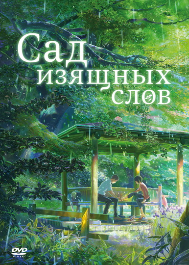

Сад изящных слов

Характеристики:
- Категория: Аниме
- Жанр: Драма и Романтика
- Год выпуска: 2011
- Студия: CoMix Wave Inc.
- Режиссер: Синкай Макото
Описание
Юноша по имени Такао встречает таинственную молодую женщину. Их случайные и как будто ни к чему не ведущие встречи в парке, где Такао прогуливает занятия, работая над достижением своей странной мечты — посвятить жизнь конструированию и изготовлению обуви — повторяются снова и снова… правда, только в ненастные дни. Сердца героев начинают приоткрываться друг другу, но на это нужно время, а впереди уже маячит конец сезона дождей…